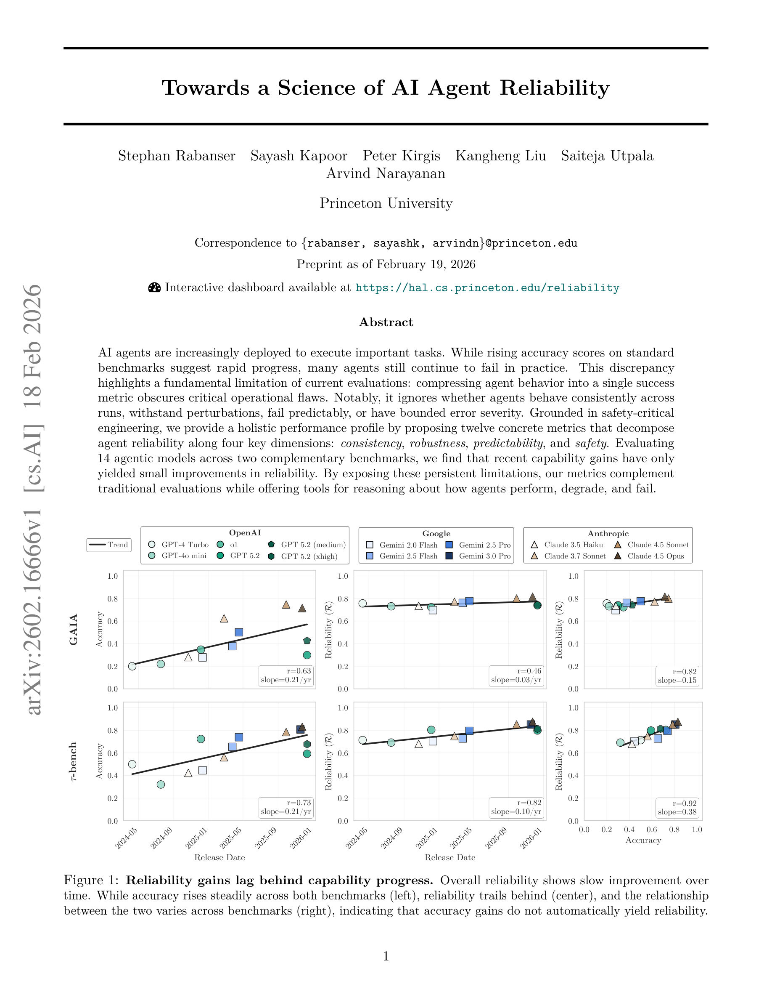

Figure 1
AI 에이전트의 신뢰성을 단일 성공률이 아닌 consistency, robustness, predictability, safety의 4가지 차원, 12개 구체적 메트릭으로 분해하여 평가하는 체계를 제안하고, 14개 에이전트 모델 평가를 통해 최근의 성능 향상이 신뢰성 개선으로 이어지지 않음을 입증한 연구.
이 논문은 AI 에이전트 평가에서 가장 간과되어 온 측면인 "신뢰성"을 정면으로 다루는 중요한 연구이다. 단일 accuracy 메트릭의 한계를 지적하고 4차원 12개 메트릭의 구체적 대안을 제시한 점은 학술적으로나 실무적으로 가치가 높다. 특히 "capability 향상이 reliability 향상으로 자동 전이되지 않는다"는 실증 결과는 현재 AI 에이전트 개발 방향에 대한 근본적인 재고를 촉구한다. Princeton/Narayanan 그룹의 이전 연구(AI Snake Oil 등)와 맥을 같이하는 비판적이면서도 건설적인 기여로, AI 에이전트의 실용적 배포를 위한 평가 표준의 기초가 될 수 있는 논문이다.
총평: AI 에이전트 신뢰성을 4차원 12지표로 체계화한 프레임워크로 과학 에이전트 배포의 실용적 기준을 제시한 중요한 연구다.